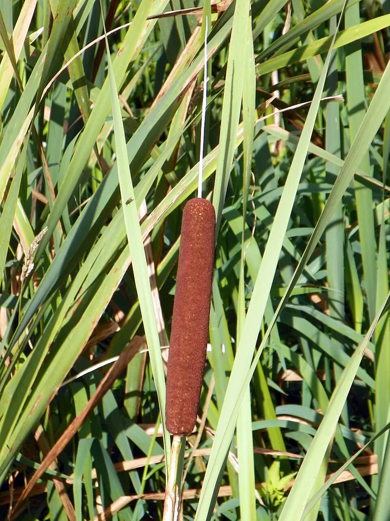

Starters & snacks
Cattail on the cob
Cattail on the cob is made with wild cattail.

How do you make cattail on the cob?
Green cattail flower spikes boiled and eaten with butter like corn.
Wild ingredients
- Cattail (Typha latifolia): in season May to August